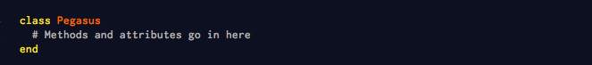
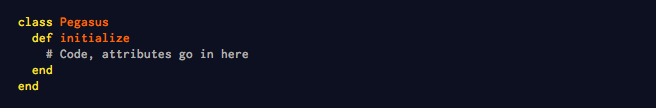
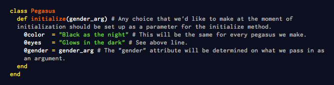
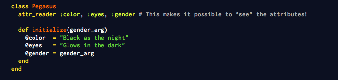
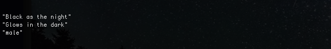
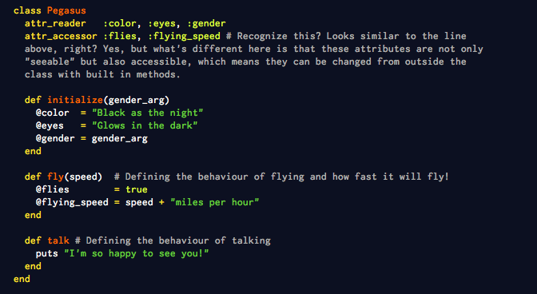
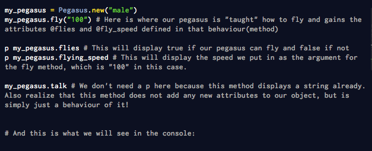
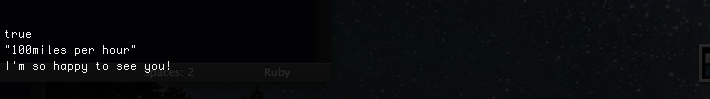

CODING IN CLASS!
Sun Nov 9, 2014
Let's assume we want to create a new kind of animal (would've been great if we could do that with Ruby for real!). We want a specific type of animal that can do certain things like flying and running fast, and can change size (methods), and is black like the night with eyes glowing in the dark (attributes).
If we wanted only one animal (object) like this we could do that with assigning some values to a variable and writing a bunch of methods. But what if we might decide to have more of the same animal? Especially if they have to be on different files? We would need to create a new variable each time, assigning the same kind of values and write the same methods over and over for each of them. And what's worse is that when we come up with a new method or attribute later on, we would have to visit back every file that has our animal and add the new method to all of them. Uggh...
Well, thaannkk youuu Ruby for classes!
Classes in Ruby is a way to group behaviours (methods) and attributes that you'd like certain objects to have.
Going with our example above (and I think our animal is very much like a Pegasus at this point), let's create a class of Pegasus because let's be honest, they are very cool and soon enough everybody is going to want them!
Yay! We created a class for Pegasus. Now if we wanted to create a Pegasus object...wait, we can't. To do that we need to write an "initialization" method. Which is code speak for giving birth to something and right now our class above doesn't know how to.
Now our class knows how to initialize a.k.a give birth to an object. However, our object will be initialized almost like an empty slate. Just like anything else that is born, the object has certain attributes that comes into existence at the moment it is initialized.
What kind of attributes do we want our Pegasus kind animal to have at the moment of initialization? Hmm, we already decided that all instances (each Pegasus) to be black as the night with glowing eyes, but we might want to have an option to make it male or female. We would have to define these as follows:
So now we can create a make Pegasus by simply typing:
You see the variable names that start with the sympbol "@"? Those are instance variables and are accessible to every instance of the class. You would think we'd be able to "see" those attributes when we look at our pegasus, right? Well, not yet, because we didn't make those attributes visible. And this is how we do that:
Now we can see them all! All we need is to type the following:
And the console will display it all:
Well, how about the things we want our pegasus to do? We would like it to fly, 100 miles/h to be exact. Oh and also we want it to talk to us. Since these are behaviours, we have to define them as methods. These methods will be accessible to every instance (created object) of the class.
Could you tell me which new attributes we added to our object? Yes! @flies and @flying_speed. It is important to realize though that these attributes are not inherent in our pegasuses when they are created. These attributes get to be a part of the object ONLY after these methods are called on these objects - or in other words, these attributes become a part of our pegasus only after it is taught them;) Like this:
And this is what we will see in the console:
So this is how we add a magical creature to the animal kingdom using Ruby Classes! I hope this helped and please feel free to contact me with any questions you may have via e-mail or twitter!